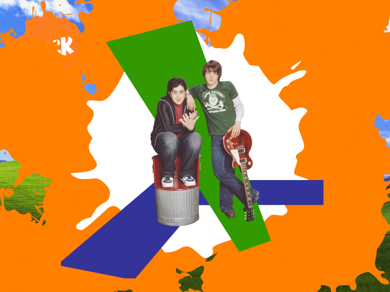
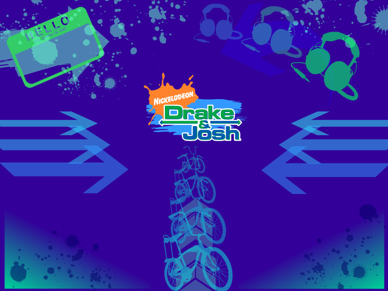

Drake & Josh Screensavers
Drake und Josh (nick.de)

DOWNLOAD
.exe file zipped (2.35 MB)
Drake y Josh (nick.es)

DOWNLOAD
.exe file zipped (2.16 MB)

 .exe file zipped (2.35 MB).exe file zipped (2.16 MB)
.exe file zipped (2.35 MB).exe file zipped (2.16 MB)